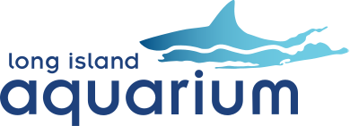
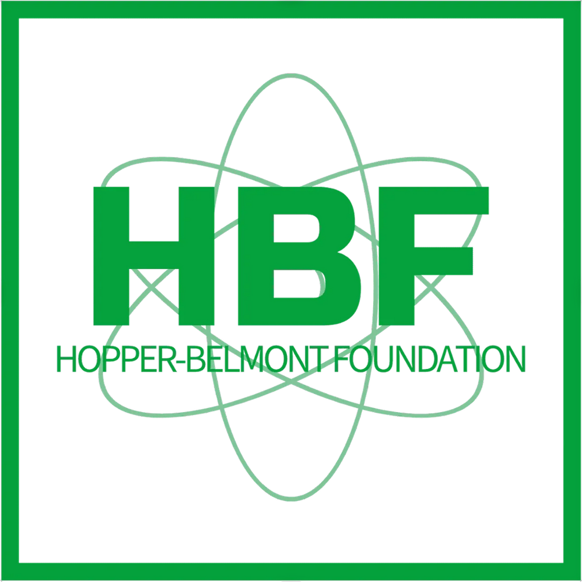
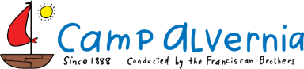

Mammal Department Intern

Long Island Aquarium · Riverhead, NY
May 2025 — August 2025
Prepared species-specific animal diets, handled medical
pills for administration according to veterinary instructions,
maintained animal and food-preparation areas, conducted
positive-reinforcement training sessions, and documented
behavior and enrichment outcomes to support welfare and
husbandry decisions. Prepared and vitaminized diets according to
prescribed nutritional requirements, and cleaned and sanitized
enclosures and equipment, contributing to successful USDA inspections.
Advisory Intern

Hopper-Belmont Foundation · Fairfield, CT
February 2025 — Present
Collaborate with a seven-person team on marketing strategy
for foundation awards, collect and analyze quantitative data
for board evaluations, review scholarly articles submitted
by aspiring cancer researchers, and contributed a published
researcher spotlight article based on an interview with a cancer
researcher. Promote new awards through Instagram, Facebook, and the
foundation website, assess award eligibility and rankings, and evaluate
submitted articles for scientific rigor and relevance.
Camp Counselor & Lifeguard

Camp Alvernia · Centerport, NY
June 2024 — Present
Led groups of 12+ campers, introduced new activities,
and collaborated with coworkers to support safe,
welcoming, and smoothly run camp operations. Supervise swimmers of
all ages, continuously monitor pool and waterfront areas for hazards,
enforce safety rules, and teach safe swimming practices. Maintain
organized swimming areas and inspection-ready rescue equipment.
Student Intern
Compass Physical Therapy · Huntington, NY
May 2026 — Present
Shadow licensed physical therapists during patient evaluations,
treatment sessions, and rehabilitation programs for orthopedic and
neurological conditions. Observe individualized treatment plans,
therapeutic exercises, manual therapy, and mobility training.
Gain exposure to patient assessment, clinical documentation, and
interdisciplinary collaboration in an outpatient setting, and prepare
treatment areas and equipment to maintain a clean, safe environment.